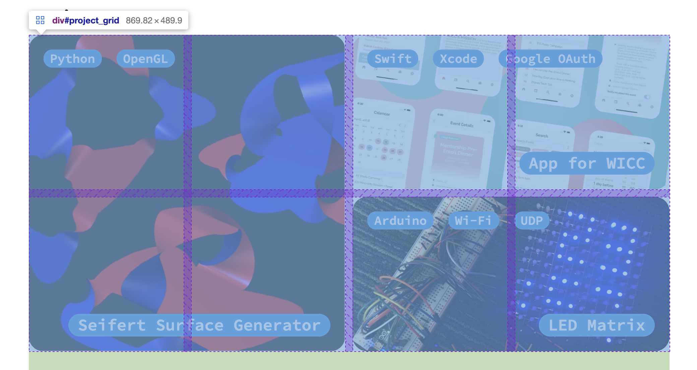

Website
View on GitHub
The first iteration of this website was published in the summer of 2019, and I’ve been adding to it every now and then ever since. Here, I’ll write a little about the inner workings, as well as some chronicle about how the website came to be the way it is now. The page is entirely static, with some pieces precompiled by Python programs and some pieces generated dynamically. The main feature of the original version of the website was the project grid, which still exists now in a similar form. Part of the inspiration for this grid was the cool layouts that can be achieved with CSS’s grid layout.
My project grid is built on top of a CSS grid with square cells, that has a dynamic number of columns based on the width of the window. The data specifying the projects in contained in a json file, which is read dynamically by a Javascript program when the page is loaded. Each project has a specified pattern of grid cells that it takes up (e.g. 2 by 2 or 1 by 2), and a priority that specifies how important it is for that project to be placed near the top of the grid. From these, a recursive algorithm is called that tests possible permutations of the projects by performing recursive swaps and evaluates the layouts based on how compact they are and how much they conform to the desired order as specified by the inputted priority values. The actual pages that include text about the projects (like this one) are separately pre-compiled by a Python program that modifies an HTML template page, which reads data from a json file that specifies a series of blocks of content for each project's page. I wrote this code before I learned about existing templating workflows, and thus ended up reimplementing a lot of technologies that already existed—so this might not be the solution I would use if implementing this again. That being said, the program I’ve developed allows me to quickly add new types of blocks (e.g. captions for images) that I can entirely control the appearance of.
I added the list of publications, which is now on the homepage, after the project grid, and thus was able to reuse some of the pre-existing infrastructure. The main goal of the publications list is for it to be incredibly simple to update, which I achieved by making the list generate dynamically from a json file containing the data. Similarly to the project grid, this involves dynamically building HTML elements with Javascript when the page is loaded.
The spinning cube visible in various places of the website has been part of the design since very early on, inspired by the potential for making simple cool animations using inline svgs.

The first design I made for the website, which includes the spinning cube (and the same font I use now for the headings!).
In order to show the animation, I compute the 3D location of the points of the rotated cube at each frame, project them into 2D with an orthographic projection, and then connect them in a pre-determined order to create the svg code for the cube, which is then injected into the HTML of the website. I really love working with inline svgs, since its so easy to control properties (such as the stroke) from CSS.
The most recent feature I added to my website is dark mode, which can be toggled by clicking the spinning cube on any page. When I first wrote the website, I used a CSS variable to store the accent color (e.g. the blue for light mode), so dynamically changing that color was incredibly simple, which inspired me to add a dark mode. It’s implemented by storing a cookie that remembers which mode is currently active, which allows the mode to persist when the page is reloaded or a new page is navigated to. In order to actually change the colors, an extra stylesheet which defines the colors for dark mode is switched from active to inactive or vice versa when the cookie is updated.